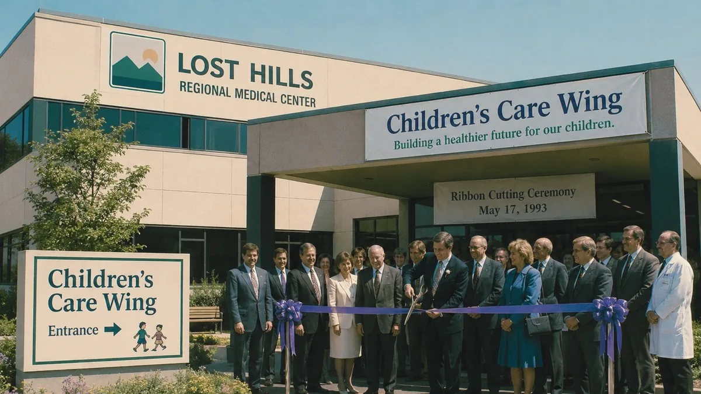
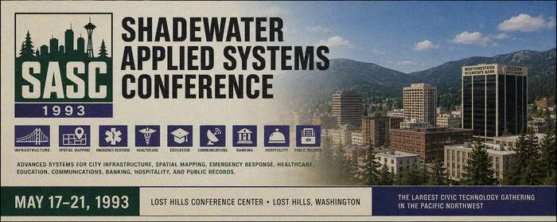

Lost Hills News Archive
A partial digital archive of The Lost Hills newspaper and supplementary civic bulletins. The newspaper, established 1902, is the paper of record for the City of Lost Hills. Articles are restored from backup volume B12; pagination, photographs, and bylines may differ from the printed editions.
Full Article — May 17, 1993

Lost Hills Regional Medical Center opened the doors of its new Children's Care Wing Monday morning to the applause of forty children, their families, city officials, and a standing-room crowd of conference delegates who had arrived a day early for the Shadewater Applied Systems Conference.
Mayor Margaret Cordell and Dr. J. Inman, LHRMC Chief of Pediatrics, cut the ribbon at 10:00 AM. The wing occupies the north face of the hospital's third floor and includes sixteen inpatient beds, two procedure rooms, a family lounge, and a dedicated communications bay linked live to the Shadewater Applied Systems network.
"Lost Hills earned this by caring about its children first," Mayor Cordell told the crowd. "That has always been who we are. Everything else — the conference, the systems, the technology — comes from that."
The wing's communications system, developed in partnership with Shadewater Laboratories, allows LHRMC to share patient-records updates with the city's public health network in real time — one of the first such systems deployed in a community hospital in the Pacific Northwest. During the ribbon cutting, a live connection was demonstrated to delegates watching from the Sezzler Conference Resort across the street.
Forty children and their families toured the wing in the afternoon. Hospital staff reported no incidents.
Archive note: photograph restored from B12. Three figures in the back row of the ribbon cutting photo do not appear on the published attendee list filed with the Clerk's Office. List available on request. — D. Wakeman, Clerk
Full Article — May 17, 1993

An estimated 1,400 delegates from across the Pacific Northwest filled the Sezzler Lost Hills Conference Resort for the opening keynote of the first Shadewater Applied Systems Conference, held Monday on the theme "The Future Works Here."
Dr. H. Ewing, Shadewater's Director of Applied Systems, told the crowd that Lost Hills represented a proof of concept for the next generation of American civic life: small enough to act quickly, careful enough to act correctly, and trusting enough of its own institutions to let technology serve them rather than replace them.
"You did not build a smart city," Dr. Ewing said. "You built a good city, and then you asked good questions about it. That is harder. That is what we are here to celebrate."
Mayor Cordell welcomed delegates on behalf of the City. Deputy Mayor Henning announced that the Municipal Service Reform Initiative had been formally approved by Council that morning, effective immediately. City Clerk D. Wakeman provided printed conference packets to the press gallery.
The conference runs through Friday, May 21. Public exhibits are free to Lost Hills residents with a CityNet card. A full schedule is available at the conference page.
Full Article — May 20, 1993
The City of Lost Hills issued a public advisory Thursday morning after residents and business owners in the downtown core reported unusual clock behaviour stretching back at least seventy-two hours. Affected timepieces include the courthouse tower clock, the Silver Dream Theatre's marquee display, the Sezzler Conference Resort lobby clock, and numerous household clocks reported by residents via the City Hotline.
The most commonly reported symptom is a clock reading 3:17 AM at other times of day, described by one caller as "exact — not approximately, exactly 3:17, and it stays there." The theatre marquee has reportedly displayed the same time since at least Tuesday evening regardless of power cycling. A second group of reports describes clocks running slowly, pausing, or briefly reversing. At least three callers reported that their clocks ran backward for periods of between fifteen and forty minutes, then resumed normal operation.
"We take these reports seriously," said a Shadewater Labs spokesman who declined to be named. "The company is working with the City to understand the scope of the phenomenon. At this time we do not believe any conference equipment is responsible." When asked what might be responsible, the spokesman said the matter was under active review.
Deputy Mayor Henning added that the Service Reform Initiative's automated systems have been functioning normally throughout. "Our CityNet terminals, our dispatch system, our new records infrastructure — all operating to specification," he said. "What is happening with consumer clocks is a separate issue."
The Clock Synchronization Advisory asks residents to call the Clerk's Office at 555-LOST-0 to report affected timepieces, including the make and model, the address, and whether the clock is mechanical, quartz, or electrical. The Clerk's Office was not available to comment on how many calls had been received as of press time.
The Lost Hills courthouse tower clock resumed normal operation briefly Thursday afternoon, then stopped entirely. Public Works is investigating.
Archive note: This article was flagged for removal on 05/22/1993 at 03:17. Removal request ignored by backup process. — D. Wakeman, Clerk
May 1993 — Article Index
| Date | Headline |
|---|---|
| 05/08/1993 | SEZZLER RESORT PREPARES FOR LARGEST CONFERENCE IN LOST HILLS HISTORY — The Sezzler Conference Resort has completed construction of the Pavilion B wing and confirmed capacity for 1,400 delegates. Parking overflow will be managed through the Civic Plaza lot and City Hall annex. Road closures on Main and Lake Road scheduled for morning hours May 17–21. |
| 05/10/1993 | MOFA OPENS "SIGNAL AND LAND" SUMMER SURVEY EXHIBITION — The Museum of Fine Art opens a new summer exhibition pairing early-20th-century survey photography of the Lost Hills basin with contemporary satellite mapping work. The museum is open daily 10 AM–5 PM through August. Admission free for conference delegates with badge. See MOFA page. CONTINUITY GRID INSTALLATION CONFIRMED COMPLETE — Shadewater Labs confirmed that the final relay nodes of the city-wide Continuity Grid have been installed and tested. Mayor Cordell called the project "the quiet infrastructure behind everything we're celebrating this week." Full grid activation is planned for the SASC closing session on May 21. |
| 05/11/1993 | CATFISH LAKE MONITORING ARRAY DEPLOYED; SURVEY TO RUN THROUGH CONFERENCE WEEK — A joint Shadewater/city environmental array has been placed at the south end of Catfish Lake for a week-long depth and water-quality survey. The array uses acoustic depth-finding technology. Environmental staff said they expect no disruption to normal lake use. See also May 19 advisory re: permit restriction. |
| 05/12/1993 | "FUTURE WORKS HERE" CONFERENCE TO OPEN MONDAY — Shadewater Labs and the City of Lost Hills will jointly host a five-day public technology expo at the Sezzler Conference Resort. Mayor Cordell calls the event "a milestone for the quiet city that built it." Delegate registration at the Clerk's Office through Friday. |
| 05/15/1993 | RIBBON CUTTING SET FOR CHILDREN'S CARE WING, MONDAY 10 AM — The new pediatric wing at Lost Hills Regional Medical Center will be dedicated Monday morning. The wing is equipped with Shadewater patient-records integration and a dedicated emergency communications bay. Public welcome. |
| 05/16/1993 | CITY ANNOUNCES SERVICE REFORM INITIATIVE — Council unanimously approves modernization of records, dispatch, and public access systems in cooperation with Shadewater Labs. "Our systems should work the way our people work," said Deputy Mayor Henning. Reform takes effect concurrent with the SASC opening. |
| 05/17/1993 OPENING DAY |
"THE FUTURE WORKS HERE" — SASC OPENS TO 1,400 CHILDREN'S CARE WING OPENS TO APPLAUSE AT LHRMC |
| 05/18/1993 |
PHONE OUTAGES REPORTED IN EAST DISTRICTS — Pacific Coast Telephone confirmed intermittent payphone failures along Catfish Lake Road and the East Plaza area. "Consistent with a known SS7 routing event," said a company spokesperson. Residents along Lake Road reported phones ringing without callers; PCT said this would be investigated separately. Service normalized by 22:00. SASC DAY TWO: HORIZON MAPPING DRAWS FULL GALLERY — The closed Horizon Mapping System demonstration in Pavilion B—[remainder of article unavailable; restored from B12 with blank trailing pages] |
| 05/19/1993 |
CATFISH LAKE ACCESS RESTRICTED PENDING SURVEY REVIEW — Lake permits have been temporarily reissued through Benthic Gas & Food Mart. Environmental crews are operating the Shadewater monitoring array south of the pier. Boating hours restricted to 06:00–15:00. Night access closed. Full notice at Catfish Lake page. SASC: CIVIC RESPONSE ENGINE DRILL DRAWS CROWD — A live emergency drill in the City Plaza Lot integrated fire, EMS, and police dispatch through Shadewater's Civic Response Engine. Total response time: 41 seconds, a new record. "That number will keep going down," said R. Olesen of Public Works. |
| 05/20/1993 | CLOCK SYNCHRONIZATION ADVISORY ISSUED BY CITY — Residents have reported clocks in the downtown core pausing, running slow, or reading 3:17 AM at other times of day. The courthouse tower clock, the Silver Dream Theatre marquee sign, and the Sezzler lobby display have all been affected. Shadewater Labs is consulting with the City. Residents are asked to call the Clerk's Office to report incidents. "We want to understand the extent of the issue," said a Shadewater spokesman, who added that the company did not believe the phenomenon was caused by any conference equipment. |
| 05/20/1993 | Article removed at the request of the City Clerk's Office. — Headline withheld pending review of source materials. (Restored from B12 three times. Each restoration includes different body text.) |
| 05/21/1993 |
SHADEWATER FINAL DEMONSTRATION — TODAY AT THE SEZZLER MAIN HALL
[ARTICLE PENDING APPROVAL — AUTHOR FIELD EMPTY — BYLINE MISSING] Today the Shadewater Applied Systems Conference concludes with a closed public demonstration of [remainder of text illegible — file corrupted at restore] |
| 05/21/1993 03:17 |
CITY MAP DISCREPANCIES NOTED
[restored from damaged backup; archive verifier failed] Several printed and digital city maps disagree on the location of the Sezzler service road, Pavilion B12, and the northern shore of Catfish Lake. Public Works is reviewing. The discrepancies were first noticed by a conference delegate who could not locate Pavilion B12 on any printed map, then located it on a hand-drawn diagram found at the front desk. ×north_lost_hills_plaza_map_1993.gif |
| 05/22/1993 | Removed at the request of the Clerk's Office. This is the fourteenth time this entry has been removed. |
| ??/??/1993 | EMERGENCY SERVICES LOG — INCIDENT 0317-B12 [entry exceeds permitted log range; deferred to restricted archive] |
Archive Notices (date index corrupted — approximate order)
| Date | Notice |
|---|---|
| 199?-??-?? | The Lost Hills newspaper's print edition is suspended indefinitely. Subscription refunds available through Northwestern Interstate Bank. Online archive to be maintained by the Clerk's Office. |
| 199?-??-?? | Archive digitization performed by Megabyte Computers under contract with the Clerk's Office. Source materials returned to [location field empty]. Some May 1993 editions could not be digitized; originals described as "inconsistent with themselves" by the digitization contractor. |
| 199?-??-?? | Several articles from May 1993 have been administratively withdrawn pending verification. Replacement articles will be posted as cleared. No replacement articles have been posted as of the last update. |
| 199?-??-?? | This archive was migrated to backup volume B12. Some sectors of B12 are degraded; partial restoration completed automatically. Please report any article that appears to have been re-restored after removal. The Clerk has asked that the nightly restore process be disabled; this request has not been confirmed as received. |
| ??/??/???? | Archive node citynet03 reconnected following field contact. Logging resumed. Clerk removal request on file; ignored by backup process. |
Letters to the Editor (selected, May 1993)
On the clock situation — "My kitchen clock ran backwards for forty minutes on Thursday. I called the Clerk and they sent a nice gentleman from Shadewater who replaced the clock. The new clock also runs backwards but more quietly."
— B. Halvorsen, North Plaza
On the payphones — "The payphone at Benthic rang twice on Tuesday and when I picked it up there was a tone like a fax machine and what sounded like my own voice on the other end. The clerk at Benthic said this has been happening since the conference started. I left a message for myself. I do not know what I said."
— M. Rusk, Catfish Lake Road
[letter withdrawn at family's request] — "My neighbor returned from a vacation he never took. He brought back a Sezzler keycard for a floor that does not exist. When I asked him where he had been, he described a room with no windows and a door that opened twice."
On the conference — "I have been to seventeen civic technology conferences in eleven years. The Shadewater event is the only one where the exhibitors were quieter on the last day than the first, as though something had gone differently than planned. The coffee was good."
— K. Vorster, delegate, Northwestern Interstate Bank
On the Horizon Mapping demonstration — "I attended on Tuesday afternoon, back row. The demonstrators were very calm throughout. At one point the operator appeared to lose control of the system for perhaps thirty or forty seconds. During that time the room looked different. I have thought about how to describe this exactly and I cannot. The demonstrators had the same expression afterward that people have after a near miss on the highway. When I asked one of the staff what had happened he said it was a calibration step and offered me a brochure."
— K. Vorster, delegate, Northwestern Interstate Bank
On Pavilion B12 — "I spent about an hour looking for Pavilion B12 on the day of the final demonstration. It is not on the printed conference map. It is not on the hotel map at the front desk. A Sezzler staff member showed me a hand-drawn diagram on a notepad — she said a guest had left it — and it was on that. I followed the diagram. I found a corridor I had not seen before. I decided not to continue. I have the diagram if the Clerk's Office would like it."
— Name withheld at writer's request
On Catfish Lake — "I went to the lake on Wednesday morning before the restrictions. I looked down from the north launch and the water was clear enough that I could see quite far down. I did not see a bottom. I am an experienced diver. I went home."
— Name withheld at writer's request
UNDER CONSTRUCTION Photo galleries pending restoration. Some photo files appear at the requested URL but display different images on each load. Cause under review.